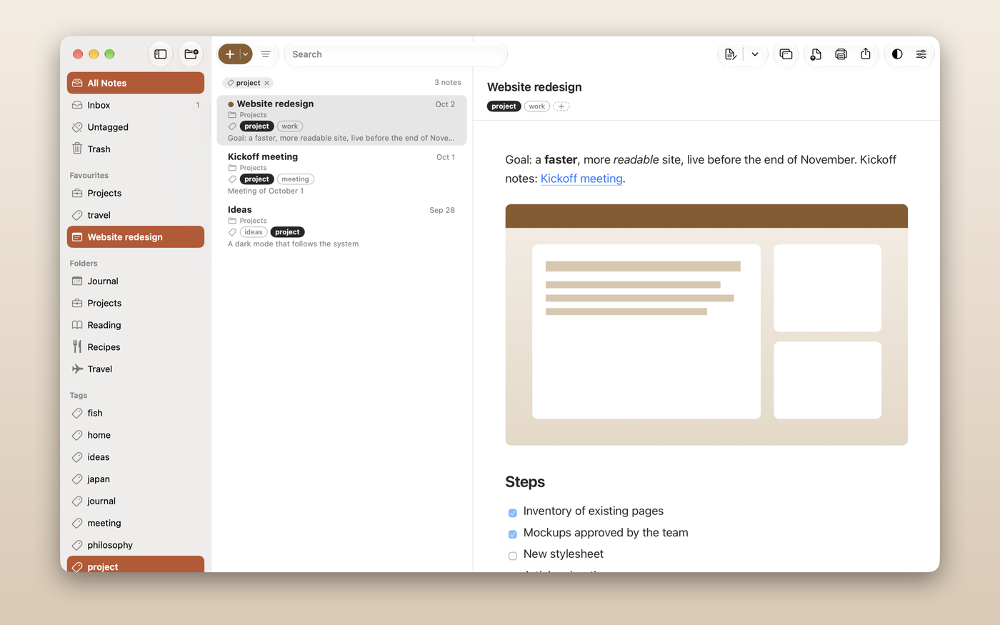
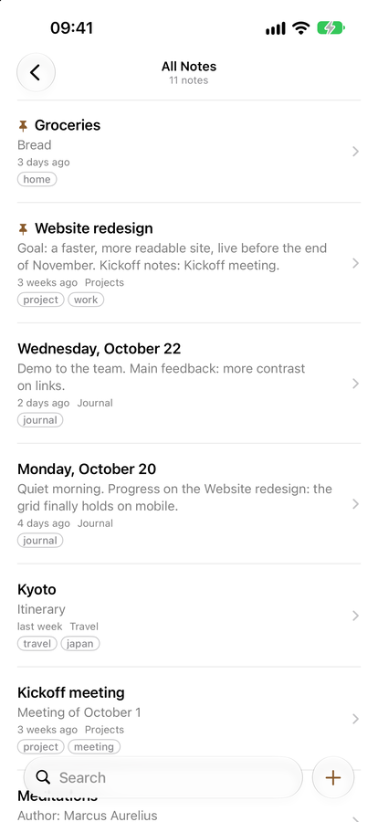

Your notes are files.
Shokonotes is what you use to find them.
A library and reader for Markdown notes kept as plain files in a folder you choose. Full-text search, folders and tags, a clean preview — and a small editor of its own for writing, or the one you already love.
Get it on the App StoreOne purchase for Mac and iPhone. No account, no subscription.

Capture in one keystroke
Press ⌃⌥⌘N in any app and a note opens, filed in your Inbox, without taking you away from what you were doing. It works with the Shokonotes window closed or minimized: the app keeps running in the Dock, ready. Write the thought, close it, carry on. You can change the shortcut in Settings.
Find
Search that answers while you type, across the whole library. Nested folders for your activities, YAML tags that cut across them, favourites and pinned notes.
Read
A clean GitHub Flavored Markdown preview, with syntax highlighting and themes. The library is strictly a reader: browsing never puts you in edit mode by accident.
Write where you like to write
Shokonotes has its own editor, small on purpose: Markdown colour that reads well, code highlighted by language, lists and code fences that continue as you type, and saving that never waits for a button. Or keep your own — Typora, VS Code, BBEdit, TextEdit or any other: you choose in Settings which one Return opens.
On iPhone
Open the same folder from iCloud Drive. Search, read, and catch a thought or a web page into your Inbox before it escapes.
Yours, and private
Plain Markdown files, readable by any app. No account, no telemetry. The Mac app has no network access at all. Sync is your choice: iCloud Drive, Nextcloud, Syncthing, Git, or nothing.
